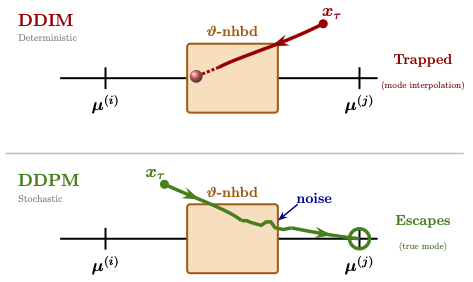
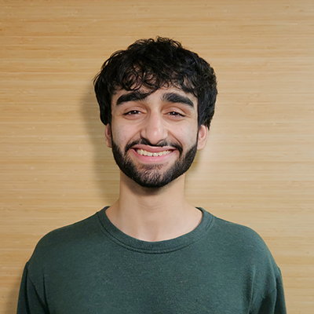
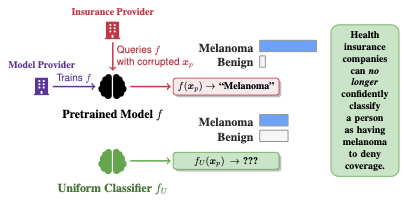
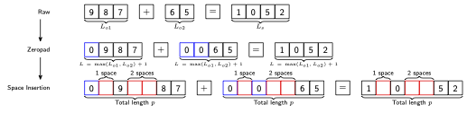

Why DDIM Hallucinates More than DDPM: A Theoretical Analysis of Reverse Dynamics
In Submission, ICML'26
|
 💻 GitHub 📚 Google Scholar 📧 ashiq [at] wisc [dot] edu |
I am a senior undergraduate at the University of Wisconsin-Madison studying mathematics and computer science, working with Prof. Grigorios Chrysos. Starting in Summer 2026, I will join the University of Michigan as a Ph.D. student in EECS at the DeepThink Lab, advised by Prof. Qing Qu and working closely with Dr. Ismail Alkhouri at Los Alamos National Laboratory. My research interests are in flow-based generative models (e.g. diffusion, flow matching, etc.). In particular, I work on:
Previously, I worked with Yeyu Wang and the Epistemic Analytics lab on learning analytics. |

Why DDIM Hallucinates More than DDPM: A Theoretical Analysis of Reverse Dynamics
In Submission, ICML'26


Data Augmentations for Arithmetic Length Generalization in Transformers
NeurIPS Workshop on What Can't Transformers Do, 2025. In Submission, ICML'26
Other publications, including all those in learning analytics, can be found at my Google Scholar.